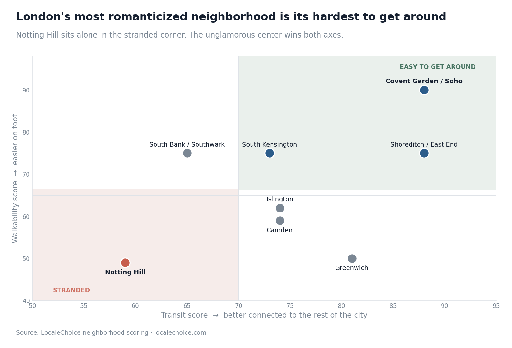

Notting Hill Is London's Most Romanticized Neighborhood. I Scored All of Them — and I'd Never Tell You to Stay There.
I ran every major London neighborhood through the same data: walkability, transit, food, and family-friendliness. The one everyone dreams about finished dead last on the things that actually shape your trip.

Notting Hill sells itself. The pastel houses, Portobello Market, the movie, the sense that you'll spend your London mornings drinking flat whites among people who look effortlessly expensive. It's the neighborhood people aspire to stay in.
It's also the worst-connected, least-walkable area I scored in the entire city — and if you base a London trip there, you'll feel it every single day.
I scored London's main neighborhoods on the four things that decide whether a city feels effortless or exhausting: how walkable they are, how well they connect to everywhere else, how good the everyday food is, and how workable they are with kids. Notting Hill came back with a walkability score of 49 — the lowest in the set — and a transit score of 59, also near the bottom. Pretty, yes. Practical, no. You'll spend a chunk of your trip waiting for connections and trekking to things that are inconveniently far from your beautiful pastel door.
Here's where the data says to actually stay.
The genuine all-rounder: Covent Garden / Soho
The unglamorous truth is that the dead-center tourist zone is, by the numbers, the best-functioning base in London. Covent Garden/Soho scores 90 for walkability, 88 for transit (the best-connected area in the city), and 85 for food — the highest combined "everyday ease" in the set. You can walk to half of what you came for and tube to the rest in minutes.
The one catch is family-friendliness: 30, the lowest score here. It's loud, dense, and adult. For couples and solo travelers, though, nothing else matches it for sheer convenience.
If you came to eat: Shoreditch / East End
Shoreditch tops the non-central pack for food at 82, with excellent transit (88). It's where London actually eats — markets, modern kitchens, the good stuff — and it's well-wired to the rest of town. Family score is low (40), so this is a pick for eaters and night owls, not for prams.
If you have kids: South Kensington and Greenwich, not the center
The pattern that holds in every city holds here too — the best family neighborhoods are the ones the nightlife guides ignore.
- South Kensington scores 90 for families — the top in London. It's wrapped around the big museums and Hyde Park, leafy, calm, and genuinely workable with children. The trade-off is food (58, the weakest here), so plan to travel for dinner.
- Greenwich scores 75 for families, with strong transit (81). It's further out and less walkable (50), but green, spacious, and built for slower days.
The balanced central pick: South Bank / Southwark
If you want to be central, near the river and the big sights, but not in the middle of Soho's noise, South Bank scores a respectable spread — 75 walk, 65 transit, 65 food, 72 family. It's the most family-tolerable of the central options, which makes it the sensible compromise for a family that still wants to be in the thick of it.
So why does everyone push Notting Hill?
Because it photographs beautifully and carries a story. But "looks like a postcard" and "works as a base" are different things, and the data pulls them apart cleanly. Notting Hill loses on the two factors — walkability and transit — that quietly determine how tired you are by day three.
The areas that win those are the ones nobody puts on a mood board.
One honest note on how I scored this
Walkability, transit, food, and family-friendliness here come from real data — mapped pedestrian infrastructure, actual transit distances, food density signals, and parks and playgrounds. I left the softer, more subjective stuff out of this piece on purpose, because I'd rather show numbers I can stand behind than dress up opinion as measurement. And the scores sit in coarse bands deliberately — a 75 versus a 73 is the same place. The patterns above hold because they're large and consistent, not because of false precision.
The takeaway
London rewards the boring choice. The most-romanticized neighborhood is the one that scores worst on the practical things, and the genuinely better bases — Covent Garden for convenience, Shoreditch for food, South Kensington for families — are the unsexy answers that make the trip easier.
If you want the full per-neighborhood breakdown for London, or to run the same scoring on any of 110 European cities — filtered for the kind of trip you're actually taking — that's what we built LocaleChoice to do.
See the full London breakdown
Every London neighborhood scored — filter by solo, family, foodie or culture.
Explore London →